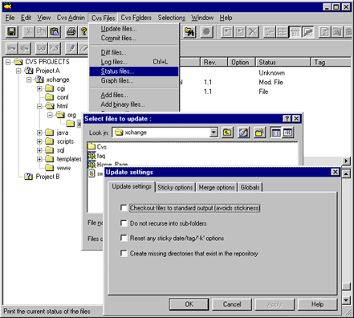
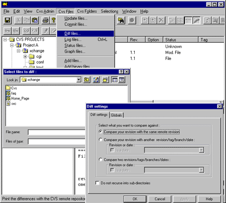

Managing files in WinCvs
Help for WinCvs: Index
If you need to find the status of a file relative to the version in the CVS repository, select Status files in the CVS files menu and select the file. The file's status, working revision number, and repository revision number are displayed in the bottom right-hand pane.
CVS status definitions:

There may be circumstances when you want to compare the repository version to your file before you commit your changes. Sometimes you may have made some particularly complex modifications to a file that you know someone else has also worked on. Selecting "Diff files..." in the "Cvs files" menu allows you to compare your file against the file in the cvs repository, or against earlier versions.

More about comparing files with diff
Finding out file status
Comparing different versions
of files
Back to main Help index